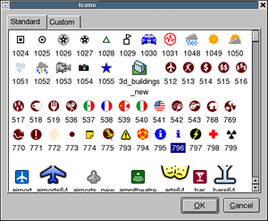

Point data can provide useful information about points of interest (POIs) around the globe or even in your home town. Google Earth Enterprise Fusion allows you to configure the display rules for point data to distinguish different types of information. This lesson guides you through the process of graphically distinguishing the popular places in California using display rules.
This exercise walks you through the process of defining, configuring, and building a vector project using a resource you created in Lesson 2.
The Asset Manager appears.
 on the toolbar. The Vector Project Editor appears.
on the toolbar. The Vector Project Editor appears.
ASSET_ROOT/Resources/Vector folder. 
The Display Rules dialog appears with the Feature tab in the foreground and the default select all rule highlighted.
These settings depend on the type of data you are working with. You can try settings you think will work, publish the data, review the result in Google Earth EC, and then go back and adjust the settings to make the data look the way you want. (Refer to the Google Earth Enterprise Fusion Reference Guide for complete details about each of the settings in this dialog.)
This area allows you to specify the content and appearance of a text label for each POI. However, there are so many POIs in California that the view in Google Earth EC would be too crowded.

A yellow star appears next to Highlight, and a blue star appears next to Normal. The result of this setting is that Google Earth EC displays a blue star for each POI, and when you mouse over the star (highlight it), it turns yellow.
The result of these settings is that when you mouse over a star, Google Earth EC displays the yellow (highlighted) star a little larger than the blue star.
«COUNTY» appears in the text box under Popup Text.
Note: You can use some basic HTML tags to format the Label text, if desired. (See Appendix C, “HTML Tags Allowed” in the Google Earth Enterprise Fusion Reference Guide for details.)
Adding this HTML code formats the name of the county as bold, followed by two line breaks to separate it from the text that follows (next step).

You return to the Vector Project Editor.
The Save dialog appears.
ASSET_ROOT/Projects/Vector folder. The new project appears in the Asset Manager when you select ASSET_ROOT/Projects/Vector in the asset navigation tree.
Google Earth Enterprise Fusion builds the project.
Although you can build and publish a database that includes a vector project only, you cannot connect directly to your server with Google Earth EC to view that data unless your database also includes an imagery project. If you publish a database that includes a vector project only, you must use the Add Database command on the File menu in Google Earth EC to add the database to the to the base imagery after logging in to kh.google.com or some other server that serves a database that includes imagery.
This exercise walks you through the process of defining and building an imagery project using a resource you created in Lesson 2. Since the focus of this lesson is on polygon display rules, it is not desirable to spend a lot of time building a large imagery project. So this exercise walks you through creating a small and simple imagery project.
Note: If you have already completed this exercise in Lesson 7, skip this exercise and move on to Define, Build, and Publish a Database for the Point Data.
 on the toolbar. The Imagery Project
Editor appears.
on the toolbar. The Imagery Project
Editor appears. The Open dialog appears.
ASSET_ROOT/Resources/Imagery folder.
The BlueMarble resource appears in the Imagery Project Editor.
The Save dialog appears.
ASSET_ROOT/Projects/Imagery folder.
The new project appears in the Asset Manager when you select ASSET_ROOT/Projects/Imagery in the asset navigation tree.
Google Earth Enterprise Fusion builds the project.
This exercise walks you through the process of defining, building, and publishing a database using the projects you created in the previous exercise.
 on the toolbar. The Database Editor appears with no projects selected.
on the toolbar. The Database Editor appears with no projects selected.
ASSET_ROOT/Projects/Vector. You do not need to add a terrain project for this exercise. Both projects appear on the list.
ASSET_ROOT/Databases folder. /ASSET_ROOT/Databases folder in the asset navigation tree.
This exercise walks you through the process of viewing your database in Google Earth EC.
Caution: If you have logged in to this server with Google Earth EC previously, log out, clear your cache, and log back in. For help with clearing your cache, refer to the Google Earth User Guide.
When you zoom in enough, Google Earth EC displays blue stars all over California. The closer you zoom in, the more spread out the stars are and the more stars you can see. When you mouse over a star, it turns yellow. When you click a star, a description balloon displays the information you specified in the format you defined in the Display Rules dialog.
Note: If you cannot see the vector data, make sure the check box next to CA_POIs in the Layers panel is checked.